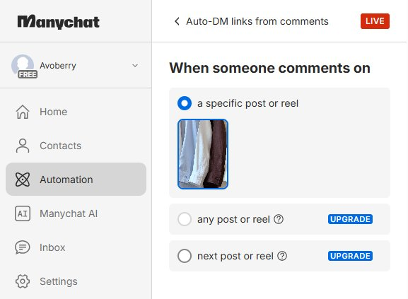
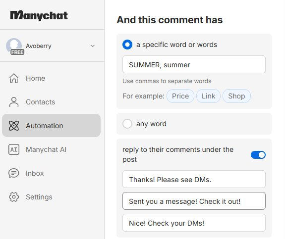
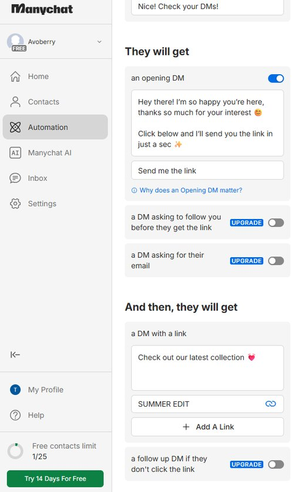
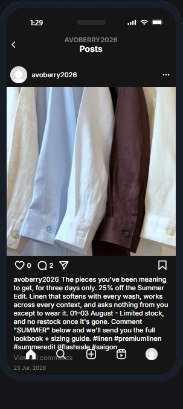
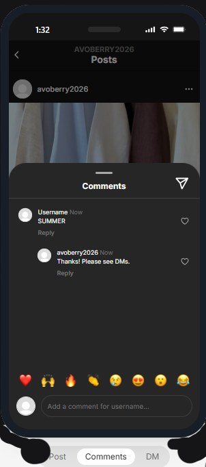
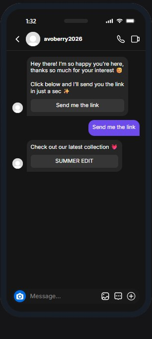
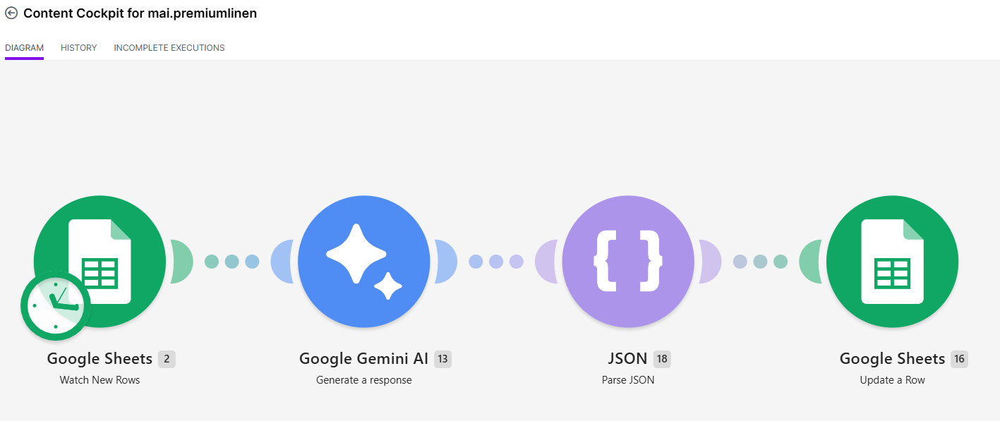
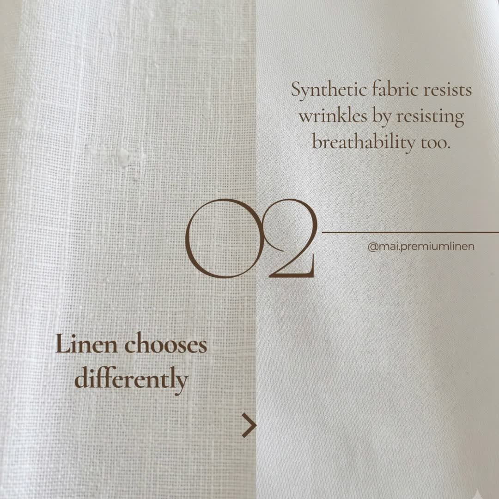
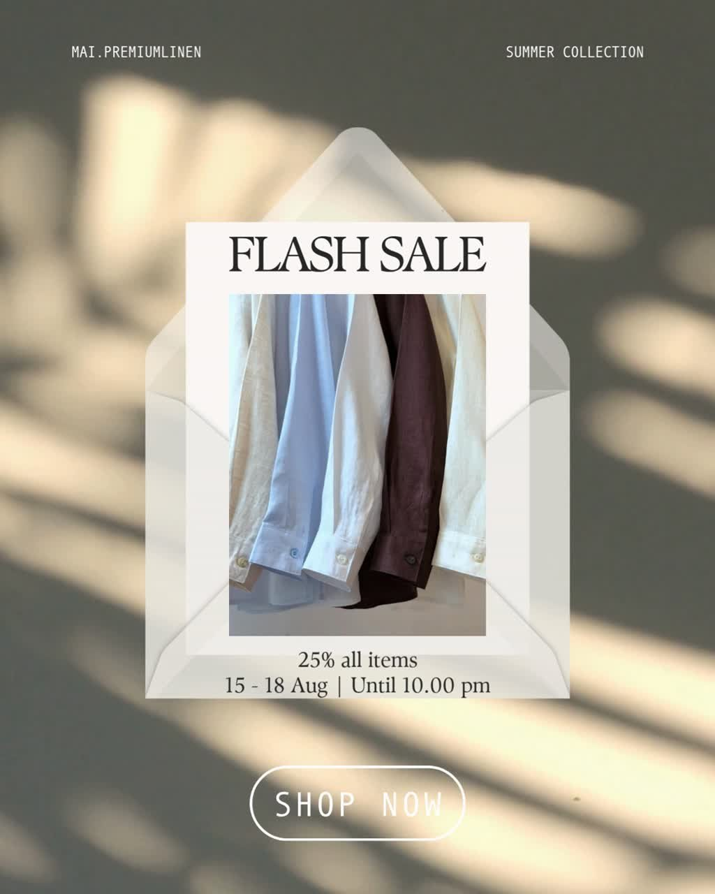
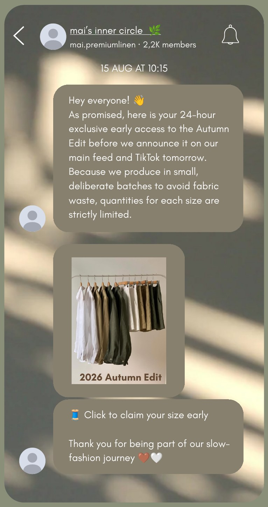

Strategy · Automation · AI creative
mai.premiumlinen
A social media strategy and content system for a one-person linen brand in Saigon: persona, funnel, 14-day plan, two automations, and AI-assisted video and carousel content.
Disclaimer: mai.premiumlinen is an existing brand that I don't own. I built the strategy, content and automations myself, based on the brand's public identity and its limits as a one-person business. Nothing was posted on the brand's accounts; all content is simulated. Product photos come from the brand's public posts. The owner has seen the full project and sent feedback (below).
The goal
Business goal. Build a loyal customer base among Gen Z students in Saigon by earning trust with honest, educational content instead of discounts.
Social media goal. Grow Instagram DM inquiries from 15 to 60 a month by Q4 2026, leading to 12–15 orders a month. The plan: 3 posts a week (2 short videos, 1 educational carousel), supported by Manychat and Make.com.
Who it's for
“I don't want more clothes. I want fewer things I actually love, and I want to know they were made with some kind of care, not just cheaply and fast.”Minh Trang, 20, university student in Saigon · buyer persona
Goals
- A small, considered wardrobe
- Outfits that work for class and coffee dates
- Brands that are open about sustainability
- Pieces that pack light for travel
Pain points
- Linen creases
- Fast-fashion fatigue
- Price vs. values
- Unsure how to care for the fabric
Buying behaviour
- Researches before buying
- Buys less, chooses better
- Trusts everyday styling over studio shots
- Pays more for pieces she'll wear often
Funnel (STDC)
| Phase | Mindset | Goal | Channel & format |
|---|---|---|---|
| See | Scrolling, doesn't know the brand yet | Introduce the brand through a feeling, not a product pitch | TikTok & IG Reels: GRWM and café outfit videos |
| Think | Interested, but unsure about creases, care and price | Teach fabric quality and build trust | IG carousel & Threads: care guides, styling tips |
| Do | Ready to buy a set for a trip | Create urgency and drive DM inquiries | IG DM funnel: Manychat comment-to-DM, flash sale |
| Care | Proud owner, happy to share | Turn buyers into advocates | IG Stories reshares, private broadcast channel |
Three content pillars
Community · builds trust
Founder's journey, behind the scenes, customer reshares.
Product · converts
Quality signals, sourcing, sale campaigns.
Education · earns attention
Dressing for the climate, care tips, sustainability.
14-day content calendar
I produced the pieces marked “Produced”. The rest are planned and documented.
| Day | Phase | Pillar | Content | Format | Status |
|---|---|---|---|---|---|
| 1 | See | Education | Dressed for Saigon Heat | Short video | Produced |
| 2 | Think | Product | Linen Crease Dilemma | Carousel, 6 slides | Produced |
| 3 | Think | Product | Linen Crease Dilemma, Threads repost | Text + photos | Produced |
| 4 | See | Community | Founder: “Why master tailors, not a factory” | Carousel | Planned |
| 5 | Think | Education | Fabric care & styling tips | Carousel | Planned |
| 6 | See | Education | Travel capsule wardrobe | Short video | Planned |
| 7 | Do | Product | Flash sale launch | Feed post + Story + DM funnel | Produced |
| 8 | Do | Product | DM funnel auto-reply live | Manychat automation | Produced |
| 9 | Do | Product | Sale reminder, last 2 days | Story + countdown | Planned |
| 10 | Do | Product | Sale closes tonight | Story + countdown | Planned |
| 11 | Care | Community | Customer photo reshare | Story template | Planned |
| 12 | Care | Education | Styling tips for purchased pieces | Carousel | Planned |
| 13 | Care | Community | Exclusive drop preview | Broadcast message | Produced |
| 14 | Care | Community | Drop preview follow-up | Broadcast message | Planned |
Automation 1
Comment-to-DM funnel
When someone comments “SUMMER” on the flash sale post, Manychat replies under the comment and sends a two-step DM: a greeting, then the sale link and size guide.
- TriggerA comment on the flash sale post.
- KeywordThe comment contains “SUMMER” or “summer”.
- Public replyManychat answers under the comment.
- Opening DMGreeting with a button.
- Follow-up DMCall to action with the sale link.
Tool switch. I planned this in Make.com, but Instagram's API doesn't let Make.com watch comments on this kind of account. I switched to Manychat, an official Meta partner built for comment-to-DM flows, and documented why.



Live test on a test account



Tested on @avoberry2026, a simulated business account connected to Manychat. Account and product images are placeholders; the workflow is ready for the real account.
Automation 2
Content Cockpit
Planning across three pillars and four funnel phases gets messy for one person. This Make.com scenario turns a running list of raw ideas in Google Sheets into a sorted content backlog.
- Idea typed inThe founder adds a raw idea to the sheet.
- Gemini classifiesFormat, platform, pillar, STDC phase, and a hook.
- JSON parsesGemini's answer becomes named fields.
- Sheet fills inThe fields go back into the same row.
~2 hours to build. Make.com suits this kind of structured, low-frequency workflow.


Content I produced
Each video clip and carousel image used the same real product photo as a reference, so fabric colour and texture stay the same from frame to frame.



All carousel slides


Prompts and what I changed
One iteration per funnel phase: what the first result got wrong and how I fixed it.
See · The café that looked European
- Problem
- Google Flow kept generating a European-style café for clip 4. The persona lives in Saigon, so the scene didn't fit her world.
- Revision
- Person sitting at an outdoor Vietnamese-style coffee shop, low plastic stool or rattan chair, small round table, camera focused on her from a side angle while two friends sit across facing away with only their backs / shoulders visible. Tropical Saigon street setting with motorbikes or narrow alley visible softly out of focus in the background, dappled shade from a tree or storefront awning, warm humid daylight, relaxed candid chatting mood, natural unposed body language, editorial minimal style, no text.
- Result
- After several rounds, the clip showed a recognisable Saigon sidewalk café: low stools, motorbikes, tropical light.
Think · A carousel that read like an FAQ
- Prompt
- Create a 6-slide Instagram carousel explaining why linen wrinkles, aimed at a Gen Z student audience hesitant about the fabric. Keep the tone premium and minimal.
- Problem
- Correct, but too explanatory. It read like a fabric-care FAQ and the cover had no emotional hook.
- Revision
- Rewrite the final carousel slide so it leads naturally into a DM conversation, without sounding like a sales prompt.
- Result
- “Still unsure? Ask us anything” beat the first draft (“Have questions about linen care? Send us a message!”). Shorter, and more like an invitation than customer service.
Do · A sale caption that was too pushy
- Prompt
- Write a sales caption for a 25% off linen sale targeting Gen Z. Tell them to comment to get a discount code.
- Problem
- It worked, but sounded too aggressive for a premium slow-fashion brand.
- Revision
- Refine the copy to maintain a calm, 'quiet luxury' tone. Emphasize limited small-batch production rather than cheap discounts to protect brand equity.
- Result
- Urgency now comes from small-batch production, not the discount. That fits the persona's values and still gives her a reason to act.
Care · “You've earned VIP access!”
- Prompt
- Write an Instagram Stories template for resharing customer photos, and a broadcast channel message offering early access to past buyers.
- Problem
- The broadcast opened with “You've earned VIP access!”, which sounds like a loyalty program and doesn't fit the brand's quiet tone.
- Revision
- Remove any language that sounds like a loyalty program (VIP, earned, points). Reframe the broadcast message as a personal, quiet heads-up rather than a reward. Keep it short.
- Result
- Early access now reads as a personal note. It also keeps the Care phase apart from the Do phase, which already carries the discount.
All video clip prompts (Google Flow)
Every clip used the same real product photo as a reference.
Text overlays (Claude):
Carousel image prompts (Gemini)
The real product photo, slide 1, anchored every generated image. Slides 2 and 3 needed a second round: slide 2 copied slide 1's framing, and slide 3's fabric comparison looked artificial.
How I'd measure it
| Phase | KPIs | Tool |
|---|---|---|
| See | Video views, watch time, follower growth, shares and saves | IG Insights, TikTok Analytics |
| Think | Carousel save rate, comments, Threads replies, profile visits | IG Insights, Threads Insights |
| Do | “SUMMER” comments, DM-to-click rate, DM-to-sale rate, sale orders | Manychat, store analytics |
| Care | Repeat purchases, customer reshares, orders from the broadcast channel | IG Insights, store analytics |
No tracking is live; these are the metrics the brand would watch once the plan runs. Two matter most each week: DM inquiries and repeat purchases, because they tie straight to the goal of 60 DMs and 12–15 orders a month.
Brand guidelines
I wrote the guidelines in Canva so every piece follows the same look: logo use, type, colour and imagery.
Headings
Cormorant Garamond
Body
Montserrat
Quotes
DM Serif Display
Feedback from the owner
“[Owner's feedback]”Founder, mai.premiumlinen · translated from Vietnamese
What I learned
The plan changed on contact with the tools. Make.com couldn't watch Instagram comments, so I switched to Manychat and wrote down why. Google Flow needed several rounds before the café looked like Saigon.
For a one-person brand, a sustainable system matters more than more content: clear pillars, a few automations, and repeatable workflows.
If the brand grew, I'd hand off content production first and keep strategy and brand voice close.
AI use (labelled per EU AI Act, Art. 50). AI-generated: video clips (Google Flow), carousel images 2–5 (Gemini), first drafts of captions, DM scripts and broadcast copy (Claude), all refined by me. No AI: persona, STDC framework, goals, the real product photos, and the Manychat and Make.com screenshots.